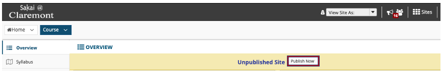
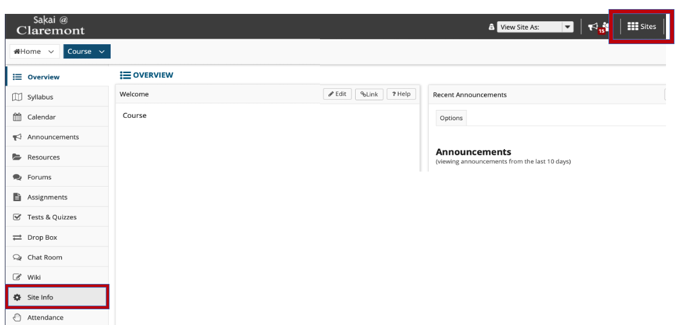
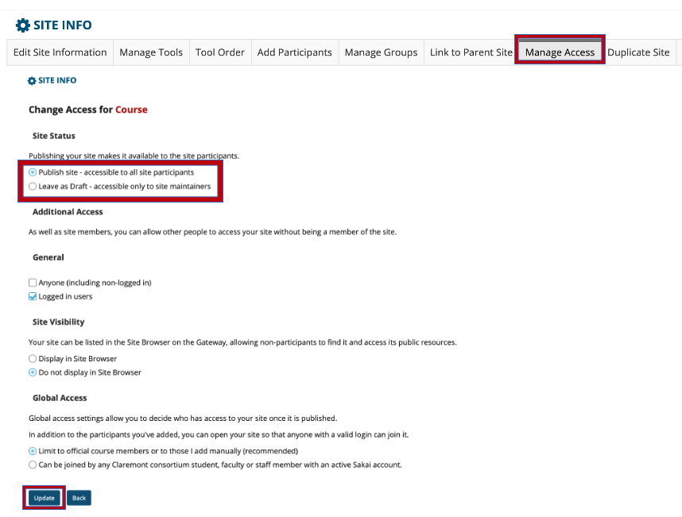

Course sites will be automatically unpublished two weeks after the grade is due. See Course Site Timeline for more information.
Republishing
Once a course site is unpublished, you can still access the site, but your students cannot. There are two ways of publishing an unpublished course site:
1. (Method 1) Click Publish Now located at the top of the course site.

1. (Method 2) Go to Site Info

2. Under the Manage Access Tab within Site Info, toggle Publish Site and Update.

*If you would like to consolidate course sites for multiple sections or courses, submit a request here.
*All Sakai users can build a project site for collaboration, projects, or testing features.